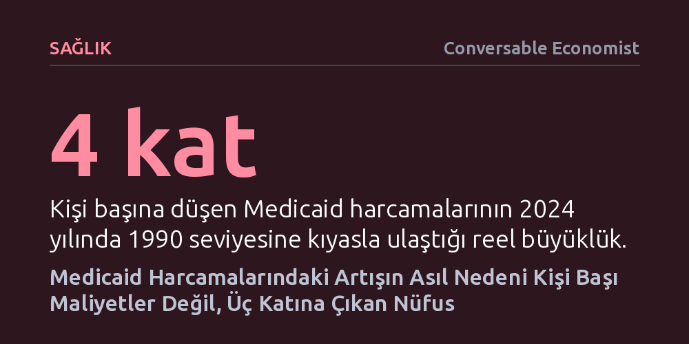

SAGLIK · Conversable Economist · 2026-10-20
Medicaid harcamalarındaki dört katlık artışın temel nedeni kişi başı sağlık maliyetleri değil, programa kayıtlı Amerikalı oranının yüzde 10'dan yüzde 30'a fırlamasıdır. Bütçenin yarısından fazlasını ise katılımcıların yalnızca yüzde 17,3'ünü oluşturan yaşlı ve engelliler tüketmektedir.
Sağlık bütçesindeki devasa büyümeyi dizginlemenin yolunun tıbbi enflasyondan ziyade, hızla genişleyen nüfus kapsamını ve yüksek bakım ihtiyacı olan kırılgan grupları doğru yönetmekten geçtiğini gösterir.

Amerika Birleşik Devletleri'nde sağlık hizmetlerinin milli gelir ve toplam tüketim harcamaları içindeki payı on yıllardır kesintisiz bir tırmanış sergiliyor. Düşük gelirlilere yönelik kamu sağlık güvencesi programı olan Medicaid harcamaları da bu genel eğilimin en somut yansıması haline geldi. Kişi başına düşen federal ve eyalet harcamaları 1990'dan 2024'e kadar düzenli biçimde yükselerek 1990 seviyesinin tam dört katına ulaştı.
Kamuoyunda bu tür bütçe patlamaları genellikle tıbbi hizmetlerin, hastane masraflarının ya da reçeteli ilaçların aşırı pahalanmasıyla, yani sağlık sektöründeki kontrolsüz fiyat enflasyonuyla açıklanır. Ancak verilerin daha derinine inildiğinde, harcamalardaki bu dramatik yükselişin ardında bireysel tedavi maliyetlerinden çok daha farklı ve yapısal bir dinamiğin yattığı görülüyor.
Veriler şaşırtıcı bir gerçeği gözler önüne seriyor: Genel enflasyona göre düzeltildiğinde, Medicaid kapsamında kişi başına yapılan ortalama harcama 1990 yılından bu yana neredeyse hiç değişmedi. Sisteme kayıtlı tek bir bireyin devlete reel maliyeti otuz yılı aşkın süredir sabit bir çizgide ilerliyor.
Toplam harcamayı katlayan asıl faktör, programa dahil edilen insan sayısındaki muazzam genişlemedir. 1990 yılında tüm Amerikan nüfusunun yaklaşık yüzde 10'u Medicaid güvencesinden yararlanırken, bugün bu oran yüzde 30 sınırına dayanmış durumda. Uygunluk kriterlerinin zaman içinde esnetilmesi; çocukları, hamile kadınları, düşük ücretli işlerde çalışan yetişkinleri ve dar gelirli haneleri kitlesel olarak kamu güvencesi şemsiyesi altına soktu.
Medicaid'in genişleyen nüfusu homojen bir yapıya sahip değil; sisteme dahil olan farklı grupların sağlık harcamaları arasında devasa uçurumlar bulunuyor. Sisteme sonradan katılan düşük gelirli çalışan yetişkinler ve çocuklar görece daha düşük maliyetli birinci basamak ve koruyucu sağlık hizmetleri tüketirken, kronik desteğe muhtaç gruplar bambaşka bir tablo çiziyor.
Programın finansal omurgasını sarsan asıl kesim yaşlılar ve engellilerden oluşuyor. Bu iki grup, toplam Medicaid nüfusunun yalnızca yüzde 17,3'ünü oluşturmasına rağmen, programın toplam bütçesinin yarısından fazlasını tek başına tüketiyor. Hastane yatışları, uzman hekim viziteleri ve özellikle huzurevi ile evde bakım gibi uzun dönemli destek hizmetleri, bütçenin aslan payını bu kırılgan azınlığa yönlendiriyor.
Ortaya çıkan bu tablo, sağlık harcamalarını kısmayı hedefleyen politika yapıcılar için ciddi bir açmaz yaratıyor. Zira ortada kişi başına aşırı şişirilmiş bir tedavi maliyeti bulunmuyor; bütçeyi büyüten şey toplumsal koruma ağının genişlemiş olması. Dolayısıyla harcamaları düşürmeye dönük klasik kısıntılar, kaçınılmaz olarak ya nüfusun yüzde 30'una ulaşan koruma kalkanını daraltmak ya da bakıma muhtaç yaşlı ve engellilere sağlanan hizmet kalitesini geriletmek anlamına geliyor.
Üstelik Medicaid'in federal hükümet ile eyalet yönetimleri arasında paylaşılan ortak finansman yapısı, karar alma süreçlerini daha da çetrefilli kılıyor. Eyaletlerin zorunlu hastane ve doktor hizmetlerinin yanı sıra reçeteli ilaç veya diş sağlığı gibi ek kapsamları belirleme yetkisine sahip olması, hem bölgesel eşitsizlikleri derinleştiriyor hem de maliyet kontrolünü merkezi bir formüle bağlamayı zorlaştırıyor.